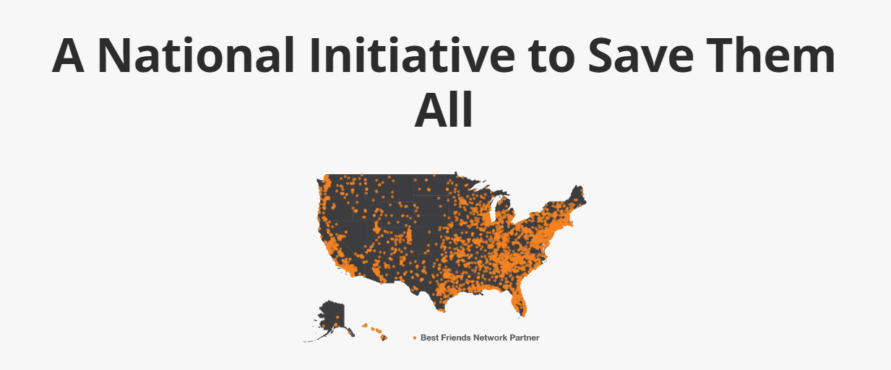

INITIATIVES
We are determined to take the entire country to no-kill by 2025. We've got the expertise and we've got the passion. And we've got the road map. So together, we are creating progressive new initiatives while growing the programs - trap-neuter-vaccinate-return for community cats, shelter foster networking, online resource centers to provide neighborhood support, and more - that have already brought us close to our goal
We’ve collected data for 95% of
pets in America’s shelters, which
tells us where help is needed most
and which animals are most at risk.
Best Friends works with more than
4,200 shelter and rescue partners
across all 50 states. More than 550
new partners joined the Best Friends
Network in 2022.
Best Friends is investing in
proven programs that help
shelters save more lives and
inspire action.

INVOLVEMENTS
1. 4.4 million
pets entered
America’s
shelters in
2022, an
increase of
nearly 2%
since 2021.
2. 378,000 dogs
and cats were
killed in
America’s
shelters. That’s
roughly 1,000
per day.
3. Dog adoptions lost
ground to breeder
purchases. In
2022, dogs made
up 45% of the
animals killed in
America’s
shelters, a steep
increase from 30%
in 2021.
4. Overall,
shelters
experienced a
higher volume
of intakes, while
adoptions and
fostering did
not keep pace.
Just 1% of shelters
make up nearly 60%
of the increase in
dogs and cats killed.
No-kill isn’t just
possible, it’s
sustainable.
Nationwide, 93% of
shelters that were no-kill in 2021 remained
no-kill in 2022.
Of the 3,943 shelters
in the United States,
57% of them are now
no-kill. This is an
increase from 52% in
2021.
ACTIVITIES AND PARTICIPATION
NATIONAL CONFERENCE: Whether you work at a shelter, volunteer with a rescue group or just interested in animal welfare, the Best Friends National Conference is for you.
BE AN EVENTS VOLUNTEER: Volunteers are crucial to the success of our events. They help the event run smoothly and ensure that every attendee has a wonderful experience.
EXPERT SPEAKERS: Request a Best Friends expert to speak about animal welfare topics, including animal behavior and care, fundraising, marketing, PR, events, legal issues, volunteers and more.